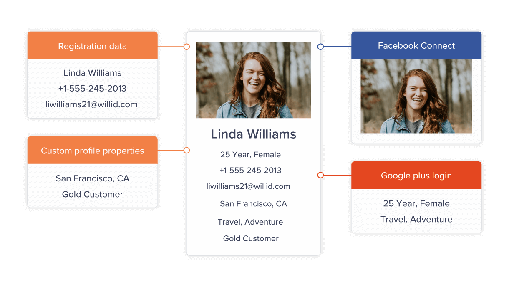

Google+, articulated and once in a while composed as Google Plus, is an Internet-based informal organization that is claimed and worked by Google. The administration, Google's fourth raid into person to person communication, experienced solid development in its underlying years, despite the fact that use insights have shifted, contingent upon how the administration is characterized.
let's discuss the functions and features of google+
User Profile:- Google+ User profile is a freely obvious record of a client that is connected to many Google properties. It incorporates fundamental informal communication administrations like a profile photograph, about segment, cover photograph, past work and school history, interests , places lived and a territory to post notices.
Circles:- Circles is a center element of the Google+ Social Platform. It empowers clients to arrange individuals into gatherings or records for sharing crosswise over different Google items and administrations.
Identity Services:- Google+ profiles are utilized as the foundation represent many Google administrations including YouTube, Gmail, Google Maps, Android, Google Play, Google Music Google Voice, Google Wallet, Google Local and more. Google Search is redone with an element called Search Plus Your World, which embeds content shared on Google+ profiles and brand pages under Web Search results, in the event that one is signed into their Google+ account while utilizing it .
Privacy:-The security setting enables clients to uncover certain data to their preferred circles. Clients can likewise observe their profile guests.